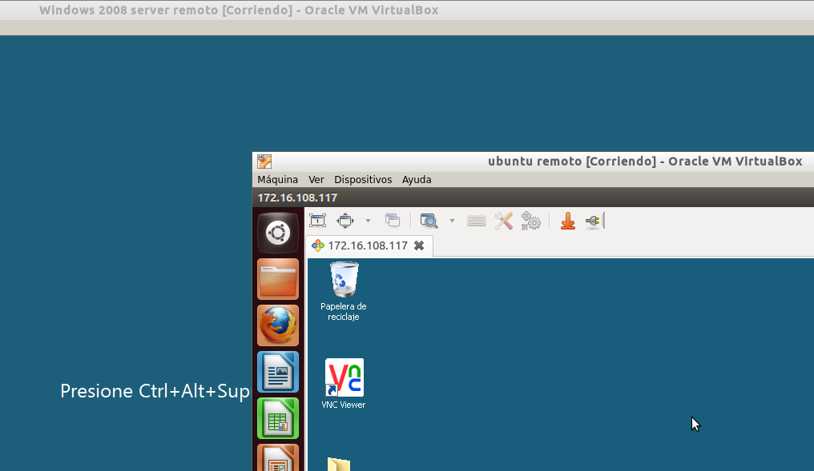
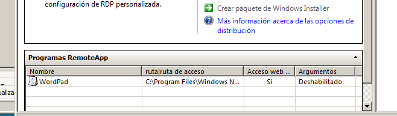

- Módulo: Administración de Sistemas Operativos
- Título del trabajo Acceso remoto
- Componentes del grupo: Silvano Pérez Yanes
- Curso Académico: 2014/2015
- Fecha de entrega: 8 de Enero de 2014
En esta actividad vamos a trabajar con acceso remoto con Linux y Windows; probando la conexión de todas las opciones posibles
Esta sería una conexión de Linux a Windows con el VNC viewer, con uno de los sistemas operativos con el VNC server
Esta es una conexión de Windows remoto a Windows server con VNC
Una conexión VNC de Windows a Linux
Una conexión RDP de Linux a Linux
Una conexión de Windows a Windows
Una conexión RDP Linux a Windows
Una conexión RDP de Windows a Linux

Una conexión RDP de Linux a Linux
En este apartado vamos a crear en Windows server un cliente para terminal services con el cual, otro sistema operativo pueda conectarse con el usuario creado de forma remota.
En este apartado, el objetivo es crear un archivo-fichero que al crearlo con RemoteApp se pueda ejecutar de forma remota en otro sistema operativo.
En esta actividad, la única dificultad ha sido la conexión RDP de Windows a Linux